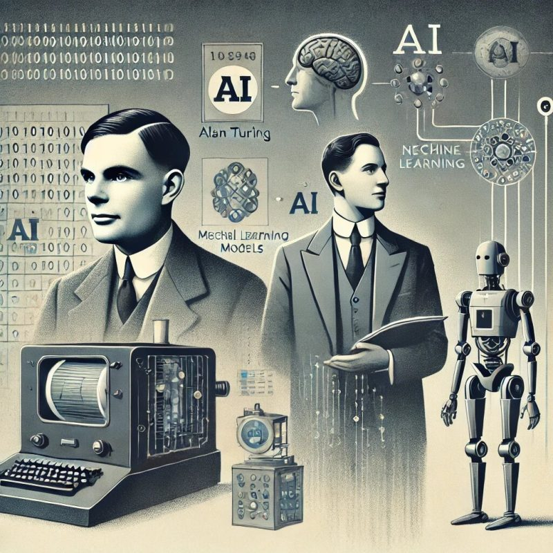
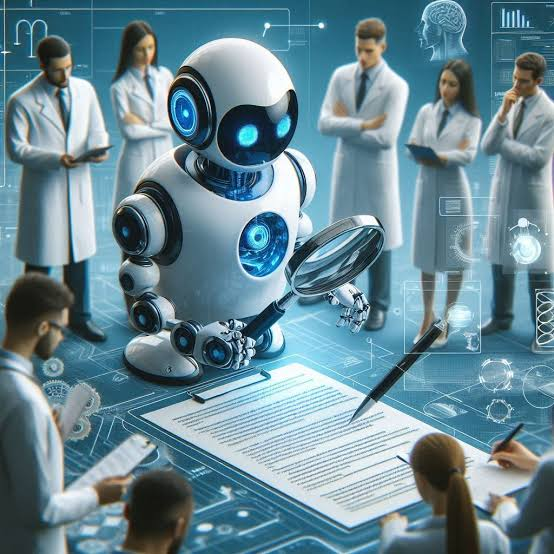
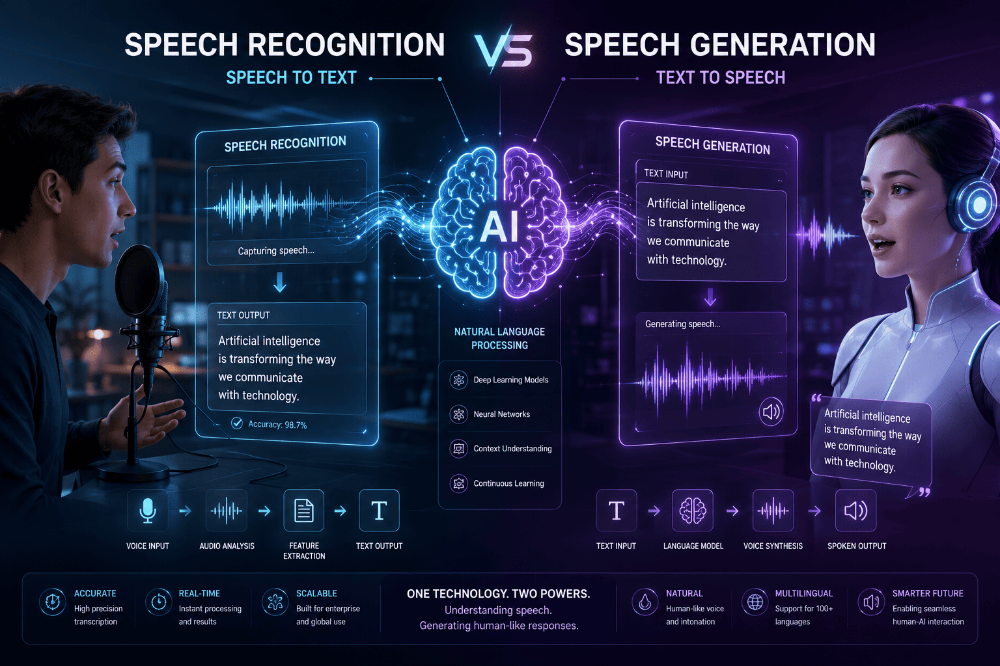
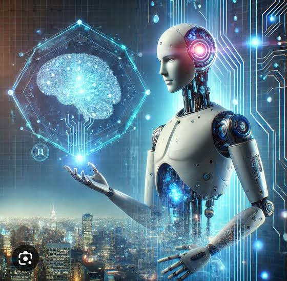
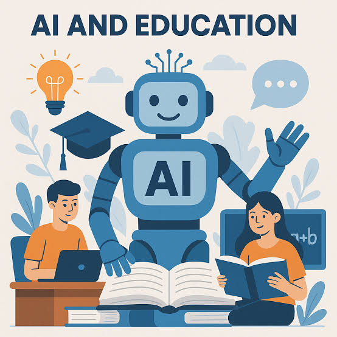
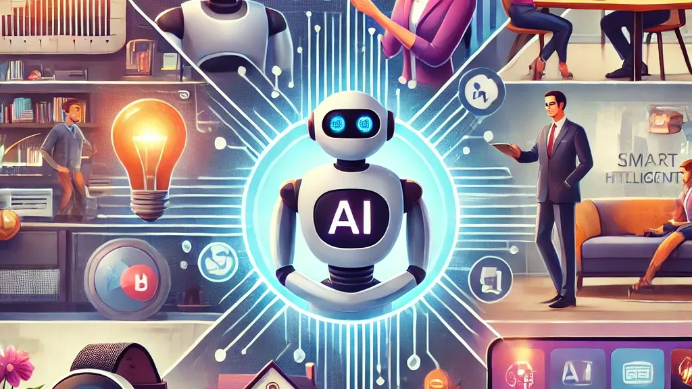
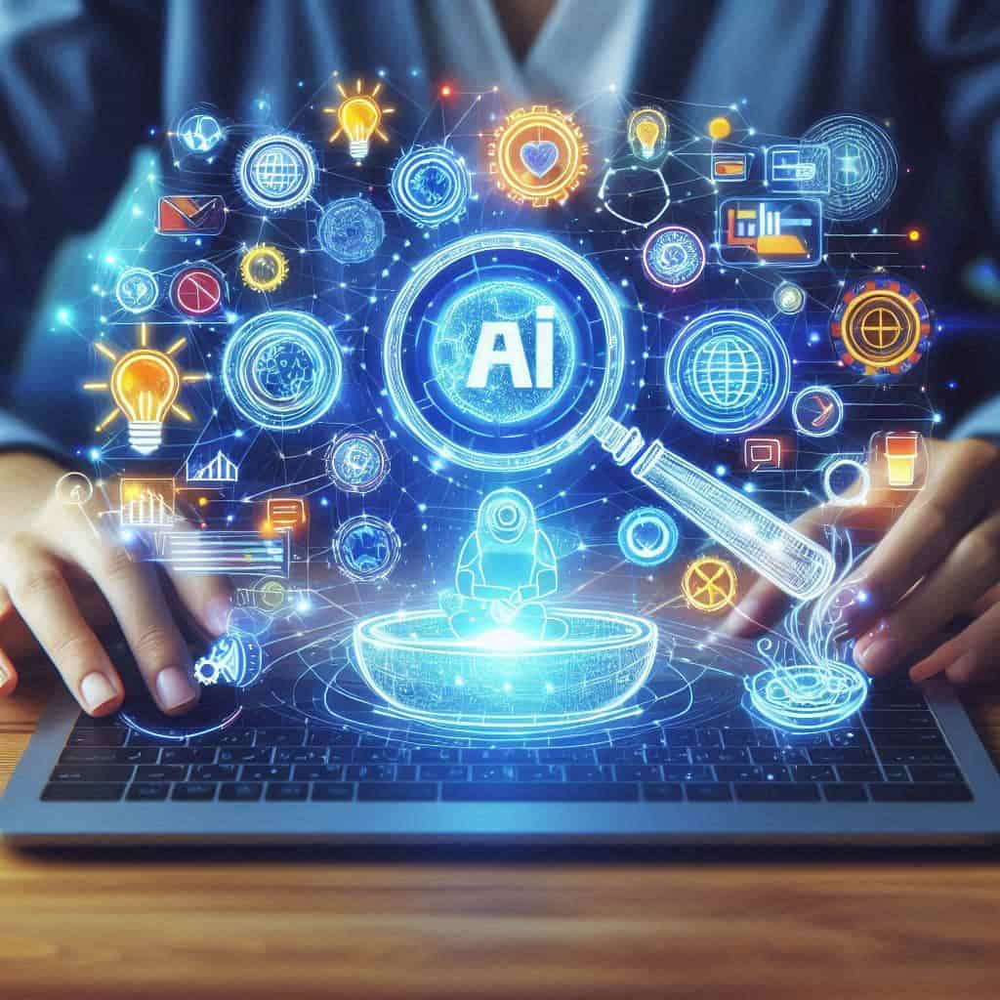
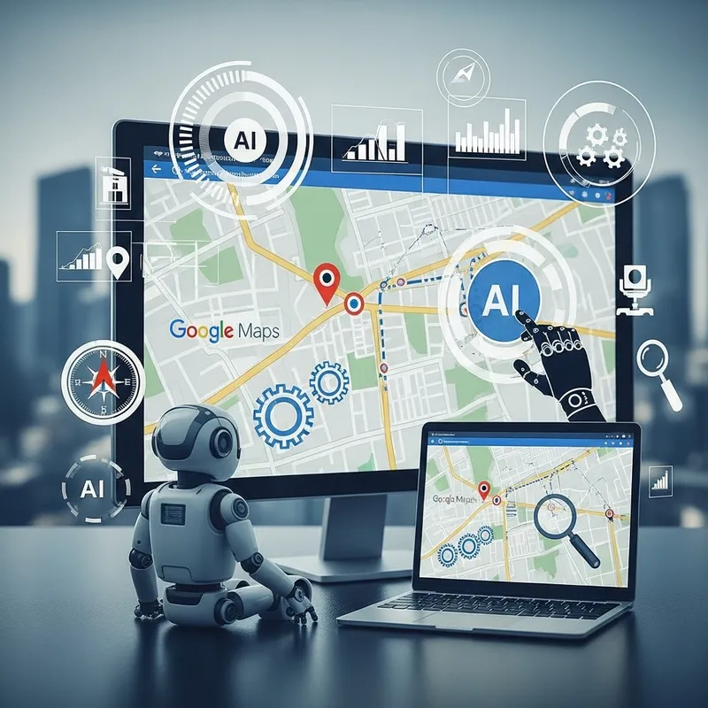
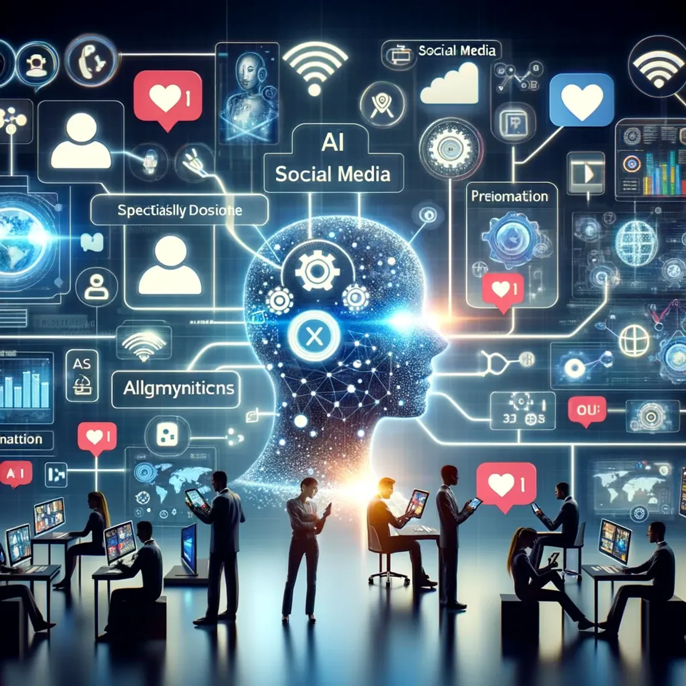

This page covers everything about Artificial Intelligence (AI), including its advantages and disadvantages, how advanced it has become, how useful it is in our daily lives, and much more. This page aims to provide you with valuable insights and comprehensive information about AI.
Introduction to AI🤖
What is AI?
Artificial Intelligence (AI) is a branch of computer science that enables machines and computer systems to perform tasks that normally require human intelligence. These tasks include learning, problem-solving, decision-making, understanding languages, and recognizing images or speech. AI systems use data and algorithms to identify patterns, learn from information, and provide useful results. AI is widely used in education, healthcare, transportation, banking, entertainment, and many other fields. For example, voice assistants, chatbots, self-driving cars, and recommendation systems use AI technology. AI helps people complete tasks more quickly and efficiently, but it can sometimes make mistakes or provide incorrect information. Therefore, AI should be used carefully and responsibly.
How does AI work?
How AI Works: Artificial Intelligence (AI) works by using data, algorithms, and computer programs to perform tasks that usually require human intelligence. First, AI systems are trained using large amounts of data, such as text, images, videos, or numbers. During training, the AI identifies patterns and learns how to process information. When a user gives it a question or instruction, the AI analyzes the input and uses what it has learned to produce a suitable response or result. For example, a voice assistant recognizes spoken words, understands their meaning, and provides an answer. AI can improve its performance through training and feedback, although it may sometimes make mistakes. In this way, AI helps computers learn from information and perform tasks efficiently.
What is Machine Learning?
Machine Learning (ML) is a branch of Artificial Intelligence (AI) that enables computers to learn from data and improve their performance without being explicitly programmed for every task. In machine learning, computers are trained using examples to identify patterns, make predictions, and solve problems. For example, a machine-learning system can study thousands of pictures of cats and dogs and learn to identify them. Machine learning is used in voice assistants, recommendation systems, spam email detection, healthcare, and self-driving cars. It helps computers become more accurate and efficient as they learn from more data and experience.
History and Evolution of AI📜
Artificial Intelligence has developed over many decades. Its history shows how computers have gradually changed from simple machines into systems that can learn, understand language, recognize images, and create content.
Timeline of AI development🕒-
1940s
Early ideas about computer intelligence and artificial neurons
1950s
Birth of AI as a formal field of research
1960s-1970s
Development of early AI programs and problem-solving systems
1980s
Growth of expert systems and commercial AI applications
1990s-2000s
Advances in machine learning and practical AI applications
2010s
Major progress in deep learning, speech, and image recognition
2020s
Rapid growth of generative AI, multimodal systems, and AI

Detailed history of AI📖-
1.1940s:Early Ideas and Research:-
During the 1940s, scientists began exploring how the human brain works and whether machines could imitate its functions. Researchers developed early mathematical models of artificial neurons, which became the foundation of modern neural networks. The invention of electronic computers also made it possible to investigate machine intelligence.
2.1950s:Birth of AI:-
The 1950s marked the beginning of AI as a formal field of study. In 1950, British mathematician Alan Turing introduced the idea of testing whether a machine could demonstrate intelligent behavior. In 1956, the term “Artificial Intelligence” was introduced at the Dartmouth Conference in the United States. Scientists began developing programs that could solve mathematical problems, play games, and perform logical tasks.
3.1960s-1970s:Early AI Programs:-
During this period, researchers created programs that could solve puzzles, prove mathematical statements, and understand simple language. Early chatbots and problem-solving systems were developed. However, computers had limited processing power and memory, so AI systems could only perform relatively simple tasks.
4.1980s:Expert System:-
In the 1980s, expert systems became popular. These systems used stored knowledge and rules to solve problems in specific areas, such as medicine, science, and business. They could provide advice similar to that of a human expert. However, developing and maintaining large rule-based systems was difficult, and interest in AI later declined during periods known as AI winters.
5.1990s-2000s:Growth of Machine Learning:-
During the 1990s and 2000s, researchers increasingly focused on machine learning, which allows computers to learn patterns from data. Improvements in computer hardware, the growth of the internet, and the availability of large datasets helped AI become more useful. AI began to be used for spam detection, search engines, recommendation systems, and speech recognition. In 1997, IBM’s Deep Blue defeated world chess champion Garry Kasparov in a chess match.
6.2010s:Rise of Deep Learning:-
The 2010s brought major advances in deep learning, a type of machine learning that uses artificial neural networks with many layers. Powerful computers and large datasets helped AI systems recognize images, understand speech, and translate languages more accurately. In 2012, deep learning achieved a major breakthrough in image recognition. In 2016, Google DeepMind’s AlphaGo defeated the professional Go player Lee Sedol, demonstrating the progress of AI in complex decision-making.
7.2020s:Generative AI and Modern System:-
During the 2020s, AI developed rapidly, especially in the area of generative AI. Modern AI systems can create text, images, music, videos, and computer programs. AI assistants can answer questions, explain difficult topics, and help people complete various tasks. Multimodal AI systems can work with different types of information, such as text, images, audio, and video. Today, AI is widely used in education, healthcare, transportation, business, entertainment, and scientific research.
Conclusion✨-
The history of AI shows how technology has progressed from simple computer programs to advanced systems capable of learning, recognizing patterns, understanding language, and generating content. AI continues to develop and is becoming an important part of modern life.
AI Tools🧰
AI tools are software applications that use Artificial Intelligence to help people perform different tasks. They are used in education, business, entertainment, healthcare, and many other fields.
Here are some different AI Tools
ChatGPT
Google Gemini
Claude
Canva
DeepSeek
Google Assistant
Meta AI
Google Translate
Jasper AI
Otter.ai
And many more...
Advantages of AI📈
Artificial Intelligence (AI) offers many benefits in our daily lives. It helps people complete tasks more quickly, improves efficiency, and provides useful solutions to different problems. Some major advantages of AI are:
1.Saves Time-
AI can complete tasks quickly, reducing the time needed for work such as searching for information, writing, and analyzing data.
2.Increases Safety-
AI can help detect dangers, monitor machines, predict equipment problems, and support safety systems in industries.
3.Improves Education-
AI helps students understand difficult topics, solve problems, learn new languages, and receive personalized learning support.
4.Works Continuously-
AI systems can operate for long periods without needing breaks, making them useful for customer support and automated services.
5.Increases Productivity-
AI helps people complete more work in less time by automating repetitive activities and assisting with complex tasks.
6.Helps in Healthcare-
AI can assist doctors in analyzing medical images, identifying possible diseases, and supporting medical research.
7.Support Decision-Making-
AI can analyze large amounts of information and identify patterns that help people make better decisions.
8.Improves Communication-
AI tools can translate languages, recognize speech, and help people communicate with others around the world.
9.Encourages Creativity-
AI can help users create images, music, stories, presentations, and videos by providing ideas and creative assistance.
10.Reduces Human Errors-
AI can perform calculations and repetitive tasks accurately, helping to reduce mistakes.
Conclusion✨-
AI makes many tasks easier, faster, and more efficient. It supports education, healthcare, communication, and various industries. When used responsibly, AI can improve people's lives and contribute to technological development.
Disadvantages of AI📉
Although Artificial Intelligence (AI) has many advantages, it also has some disadvantages. Overdependence on AI and its improper use can create problems for individuals and society. Some major disadvantages of AI are:
1.Job Displacement-
AI can automate certain tasks performed by humans, which may reduce the need for workers in some industries and lead to job losses.
2.High Cost-
Developing, maintaining, and operating advanced AI systems can be expensive because they require powerful computers, software, and skilled professionals.
3.Lack of Human Emotion-
AI cannot genuinely experience human emotions such as love, sympathy, and compassion. It may not understand people's feelings in the same way humans do.
4.Dependence on Technology-
Excessive use of AI can make people dependent on technology and reduce opportunities to develop their own thinking, creativity, and problem-solving skills.
5.privacy Concerns-
Some AI systems process large amounts of personal information, which can create risks related to privacy and data security.
6.Incorrect Information-
AI can sometimes provide incorrect, incomplete, or misleading answers. Therefore, important information should always be verified.
7.Bias in Results-
AI systems may produce unfair or biased results if they are trained using incomplete or biased data.
8.Security Risks-
AI can be misused to create scams, fake content, and misleading information, which may harm individuals and organizations.
9.Reduce Human Interaction-
Excessive reliance on AI assistants may reduce face-to-face communication and human interaction.
10.Environmental Impact-
Training and operating large AI systems can require significant amounts of electricity and computing resources, which may contribute to environmental problems.
Conclusion✨-
AI is a powerful technology, but it also has limitations and risks. It should be used responsibly and carefully. Human judgment, creativity, and ethical decision-making remain important even when AI is used.
How Advanced is AI Today🔮
Artificial Intelligence has developed rapidly from simple computer programs into advanced systems that can understand language, recognize images, process sounds, create content, and help solve complex problems. Today, AI is used in education, healthcare, science, communication, and many other fields.
1.Understanding and Generating Texts:-
Modern AI systems can understand written language and generate meaningful responses. They can process large amounts of information, recognize patterns in language, and use what they have learned to produce useful content.
AI can-
Explain concepts: Make difficult topics easier to understand.
Summarize information: Shorten long articles and documents while keeping important points.
Translate languages: Convert text from one language to another.
Help write and debug code: Suggest programs and find errors in computer code.
Generate content: Create stories, essays, emails, reports, and other written material.

Interesting fact:Some AI systems can understand speech even in noisy environments, although errors may occur.
2.Understanding Images:-
AI has become increasingly capable of analyzing and understanding visual information. Using computer vision technology, AI systems can identify objects, recognize patterns, and extract useful information from photographs and diagrams.
Some AI systems can-
Identify objects: Recognize animals, vehicles, plants, and other items.
Read text from photographs: Extract words from documents, signs, and handwritten notes.
Analyze diagrams: Help explain charts, graphs, maps, and scientific diagrams.
Interpret medical images: Assist doctors in examining medical scans under professional supervision.
Interesting fact:Image-recognition AI is used in smartphones, research, and security systems.
3.Understanding Audio and Speech:-
AI can process sounds and spoken language using speech-recognition and audio-analysis technologies. This allows computers to understand what people say and respond to spoken instructions.
AI can-
Convert speech into text: Turn conversations and lectures into written notes.
Translate spoken languages: Convert speech from one language into another.
Recognize sounds: Identify speech, music, alarms, and other noises.
Support voice applications: Power voice assistants, voice typing, and automated services.

Interesting fact:Some AI systems can understand speech even in noisy environments, although errors may occur.
4.Generating Images and Videos:-
Modern AI can create images, videos, and other forms of digital media from written descriptions. This technology is known as generative AI. It allows users to turn their ideas into visual content without needing advanced artistic or editing skills.
AI can-
Create realistic or artistic images.
Generate illustrations, posters, and digital artwork.
Produce videos and animations.
Edit pictures by changing backgrounds or objects.
Help designers, students, and content creators.

Example:A user can describe a futuristic city, and AI can create an image based on that description.
5.Robotics and Automation:-
AI plays an important role in robotics and automation by helping machines understand their surroundings and perform tasks. Robots can use AI to process information from cameras, sensors, and other devices.
AI can help robots-
Navigate environments: Move through rooms, factories, and warehouses.
Identify objects: Recognize and locate different items.
Perform tasks: Sort, carry, assemble, and organize materials.
Work in dangerous places: Assist humans in certain industrial and disaster-response situations.
Interesting fact:AI-powered robots are used in factories, warehouses, agriculture, and research laboratories.
6.Scientific Research:-
AI is becoming an important tool for scientists and researchers. It can process huge amounts of information, recognize patterns, and help researchers investigate problems that may be difficult to solve manually.
AI is used to-
Analyze large amounts of scientific data.
Study protein structures and biological processes.
Support research in physics, chemistry, and astronomy.
Help discover medicines and investigate diseases.
Study climate change and space.
Interesting fact:AI systems such as AlphaFold have helped researchers study protein structures, supporting progress in biology and medicine.
7.AI in Education:-
AI is changing the way students learn by providing personalized explanations, practice activities, and learning support. It can help learners understand difficult topics at their own pace.
AI can-
Explain difficult topics with simple examples.
Help solve mathematical and scientific problems.
Provide practice questions and feedback.
Translate educational materials.
Help prepare notes, presentations, and study plans.

Example:An AI tutor can explain the same topic in different ways until a student understands it.
8.AI in Healthcare:-
AI is helping healthcare professionals analyze information, improve services, and support medical research. It can process medical data and identify patterns that may be difficult for humans to notice quickly.
AI can-
Help analyze medical images.
Identify possible signs of diseases.
Support medicine discovery and medical research.
Organize patient information.
Assist hospitals with scheduling and management.
Important:AI supports healthcare professionals, but important medical decisions require qualified doctors.
9.AI in Everyday Life and Communication:-
AI has become a part of everyday life, even when people do not always realize they are using it. It helps power many of the apps, websites, and digital services people use daily.
AI is used in-
Search engines: Finding relevant information.
Navigation apps: Suggesting routes and analyzing traffic
Online shopping: Recommending products.
Entertainment: Suggesting movies, music, and videos.
Communication: Translating languages and improving writing.
Spam detection: Identifying unwanted or suspicious messages.
Voice assistants: Responding to spoken questions and commands.

Interesting fact: Many people use AI every day without realizing it.
Important Point About Modern AI⚡-
Although AI can perform impressive tasks, it is not perfect. It may give incorrect answers, misunderstand questions, or produce biased information. It does not have human emotions, experiences, or common sense in the same way people do. Therefore, human judgment and supervision are still important.
Conclusion✨-
AI has grown from simple computer programs into advanced technology that can understand language, recognize images, process sounds, create content, and assist humans in many fields. AI is not just making computers smarter—it is changing the way we learn, create, communicate, and imagine the future.
AI in Daily Life🏠
Artificial Intelligence is no longer limited to laboratories or advanced machines. It has become a part of our everyday activities, often working quietly in the background. From unlocking our phones to suggesting movies and detecting online fraud, AI makes many daily tasks easier, faster, and more convenient.
1.Smartphones and Face Recognition:-
AI helps smartphones recognize faces, unlock devices, improve camera quality, and predict the next word while typing. It can also organize photographs and identify useful features in pictures.
2.Search Engines:-
AI helps search engines understand what users are looking for and provide relevant results. It can also suggest related questions, correct spelling mistakes, and make searching for information easier.

3.Online Shopping:-
Shopping websites use AI to recommend products based on users’ interests and previous activities. AI also helps stores manage stock, predict customer demand, and improve online shopping experiences.
4.Entertainment and Recommendations:-
Platforms such as YouTube, Netflix, and Spotify use AI to recommend videos, movies, and music. These suggestions are based on users’ interests and viewing or listening habits.
5.Maps and Navigation:-
AI helps navigation apps analyze traffic, estimate travel times, and suggest suitable routes. It can also predict busy roads and help people plan their journeys.

6.Email and Spam Detection:-
AI can identify unwanted emails, spam, and suspicious messages. It also helps organize inboxes and suggest quick replies, making email management easier.
7.Banking and Fraud Detection:-
Banks use AI to identify unusual transactions and detect possible fraud. AI-powered systems can also provide customer support and help users manage their banking activities.
8.Smart Homes:-
AI is used in smart speakers, automatic lights, smart thermostats, and home security systems. These devices can respond to commands and adjust certain settings according to users’ habits.
9.Social Media:-
Social media platforms use AI to recommend posts, videos, and accounts that users may find interesting. AI also helps apply camera effects, organize content, and detect certain harmful or inappropriate material.

10.Weather Forecasting:-
AI helps analyze weather data and identify patterns in temperature, rainfall, and storms. This can support more accurate forecasts and help people prepare for changing weather conditions.
Conclusion✨-
AI has quietly become a part of many everyday activities. It helps us use smartphones, shop online, travel, manage emails, and enjoy entertainment. Although AI makes life more convenient, we should use it responsibly and protect our personal information.
Future of AI🚀
The future of Artificial Intelligence is full of exciting possibilities. As technology continues to develop, AI may become more intelligent, creative, and capable of handling complex tasks. It could change the way people work, study, travel, and interact with technology.
1.Smarter AI Assistants:-
Future AI assistants may understand people’s needs more naturally and help them organize their schedules, manage tasks, and complete complicated activities.
2.More Personalized Learning:-
AI may create learning experiences specially designed for each student. It could adjust lessons, activities, and explanations according to a learner’s progress and interests.
3.Advances in Medicine:-
AI may help researchers discover new treatments, understand diseases, and develop more personalized healthcare. It could support doctors in making faster and more informed decisions.
4. Self-Driving Transportation:-
Future transportation may use more advanced AI to improve navigation, reduce accidents, and make travel safer and more efficient. Autonomous vehicles may become more common as the technology improves.
5.AI in Space Exploration:-
AI could help scientists explore distant planets, analyze information from space missions, and operate robots in places that are difficult or dangerous for humans to reach.
6.More Creative Possibilities:-
Future AI may help people create realistic films, interactive games, music, artwork, and virtual worlds. It could allow individuals to turn imaginative ideas into detailed experiences.
7.Solving Global Problems:-
AI may support efforts to address climate change, improve energy efficiency, predict natural disasters, and manage important resources such as water and electricity.
8.New Careers and Skills:-
As AI changes the workplace, new careers may develop in AI development, robotics, data science, and technology management. People may also need to learn new skills to work effectively alongside AI.
9.Safer and More Responsible AI:-
Future AI development will need to focus on privacy, fairness, security, and preventing misuse. Researchers and governments will work toward creating AI systems that people can trust.
Conclusion✨-
The future of AI could bring remarkable changes to human life. It may help us discover new things, improve technology, and solve problems that seem difficult today. However, the real success of AI will depend not only on how intelligent it becomes, but also on how wisely and responsibly humans use it.
AI and Students🎓
Artificial Intelligence is becoming an important part of student life. It is not only a tool for completing homework but also a technology that can help students become more independent, organized, and confident learners. When used properly, AI can support students in understanding subjects, exploring new ideas, and preparing for their future.
1.Finding Learning Resources:-
AI can help students discover useful books, websites, videos, and educational materials. It makes it easier to find information related to a particular subject or topic.
2.Improving Study Habits:-
AI can help students organize their study schedules, set reminders, and plan their time. This encourages better time management and helps them balance studies with other activities.
3.Practicing for Exams:-
AI can generate quizzes, multiple-choice questions, and practice tests. Students can use these activities to check their preparation and identify topics that need more attention.
4.Developing Problem-Solving Skills:-
AI can present different approaches to a problem and encourage students to think about possible solutions. By examining these approaches, students can develop logical thinking and improve their ability to solve problems independently.
5.Improving Writing Skills:-
AI can help students identify spelling mistakes, improve sentence structure, and organize their ideas. It can also suggest ways to make essays, reports, and assignments clearer.
6.Supporting Group Projects:-
AI can help students divide project responsibilities, organize ideas, prepare outlines, and plan presentations. This makes teamwork more organized and productive.
7.Encouraging Curiosity:-
Students can use AI to explore subjects beyond their textbooks. They can ask questions about space, history, inventions, technology, and other interesting topics, encouraging curiosity and independent learning.
8.Preparing for Future Careers:-
AI helps students become familiar with modern technology and develop digital skills. Learning how to use AI responsibly can prepare them for future careers in fields such as science, business, design, and computer technology.
9.Supporting Students with Different Needs:-
AI can provide information in different formats, such as written explanations, audio, and simplified text. This can make learning more accessible and comfortable for students with different learning preferences.
Important Reminder⚠️-
Students should use AI as a learning assistant, not as a replacement for their own thinking. They should check information, complete their work honestly, and develop their own knowledge and skills.
Conclusion✨-
AI can make student life more organized, creative, and engaging. It helps learners explore information, practice skills, and prepare for the future. When students use AI wisely, it becomes a helpful partner in learning rather than a shortcut to avoid learning.
Is AI a Benefit or a Danger?⚖️
Artificial Intelligence is one of the most powerful technologies in the modern world. It has the ability to make our lives easier, improve our work, and help us solve difficult problems. However, like any powerful invention, AI also has certain risks. Whether AI becomes a benefit or a danger depends largely on how humans develop and use it.
1.AI as a Benefit:-
AI can bring many positive changes to society. It helps people complete tasks faster, supports scientific research, and makes technology more accessible.
Improves education: AI helps students learn, practice, and explore new subjects.
Supports healthcare: It assists doctors and researchers in understanding diseases and developing treatments.
Saves time: AI can handle repetitive tasks and process large amounts of information quickly.
Encourages innovation: It helps scientists, engineers, and creators develop new ideas and technologies.
Improves accessibility: AI-powered tools can help people with disabilities communicate, read, and use technology.
2.AI as a Danger:-
AI can also create problems when it is misused or used without proper supervision.
Job displacement: Automation may reduce the need for workers in certain jobs.
Privacy concerns: AI systems may process large amounts of personal information.
Misinformation: AI can be used to create false news, misleading images, and fake videos.
Overdependence: Excessive use of AI may weaken people's independent thinking and problem-solving skills.
Security risks: AI can be misused for scams, cyberattacks, and other harmful activities.
What Determines the Result?🤔-
AI itself is a technology, not something that is automatically good or bad. Its effects depend on the choices people make while designing, developing, and using it. Responsible use, strong safety measures, privacy protection, and human supervision can help increase its benefits and reduce its dangers.
Conclusion✨-
AI can be both a great benefit and a potential danger. It can improve education, healthcare, science, and everyday life, but it can also create risks if used carelessly. The real challenge is not stopping AI, but learning how to use it wisely and responsibly so that its benefits reach everyone.
AI Myths vs Reality🔍
Artificial Intelligence is becoming a major part of our lives, but many people have misunderstandings about what AI can actually do. Let’s explore some common myths and the reality behind them.
Myths
Reality
AI has human-like intelligence.
AI can perform impressive tasks, but it does not understand the world or think exactly like humans.
AI will take every human job.
AI may replace some tasks and change certain jobs, but it can also create new career opportunities and work alongside people.
AI is always correct.
AI can make mistakes, misunderstand questions, and provide incorrect information. Important answers should be checked.
AI can predict the future perfectly.
AI can study patterns and make predictions, but it cannot know the future with complete certainty.
AI has real emotions and feelings.
AI can recognize emotional language and respond in a caring way, but it does not experience emotions like humans do.
AI can learn everything on its own.
AI requires suitable data, training, computing resources, and human guidance to develop its abilities.
AI is only useful for technology experts.
AI is used by students, teachers, doctors, artists, businesses, and many other people in everyday life.
AI can solve every problem.
AI is useful for many tasks, but it has limitations and may struggle with unfamiliar situations, common sense, or complex real-world decisions.
AI is always dangerous.
AI can provide many benefits when used responsibly, although misuse and poor design can create serious risks.
AI will completely replace humans.
AI can automate certain tasks, but human creativity, judgment, relationships, and responsibility remain important.
Conclusion✨-
AI is neither a magical machine nor an unstoppable force. It is a powerful technology with both abilities and limitations. Understanding the difference between myths and reality helps us use AI wisely, safely, and responsibly.